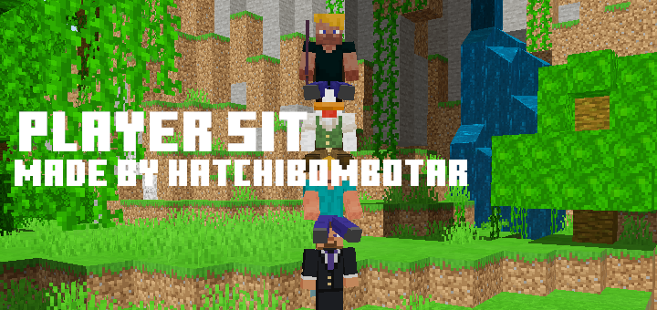
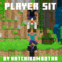
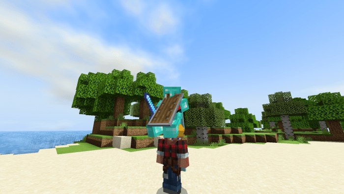

This Pack Adds the Ability to sit on other player’s heads. This was inspired by the Minecraft Ultimate Competition and the ability to sit on your teammates heads. Just jump on!

Player Sit
To Get On Your Friends You Use the Place block or Use Button.
After that you can ride them to your heart’s content.
This Works In the Sky, In Air and in Water. It Even Works In a Boat or Minecart.
To Exit Your Friends Just Simply Press the Jump Button.

Someone sitting on another player

How do I sit on other players?
On Mobile Hold Down On them until you are on them. On All Other Devices use the place block button.

All of my addons are compatible with all devices and all of my other addons. This addon is compatible with a few other addons.